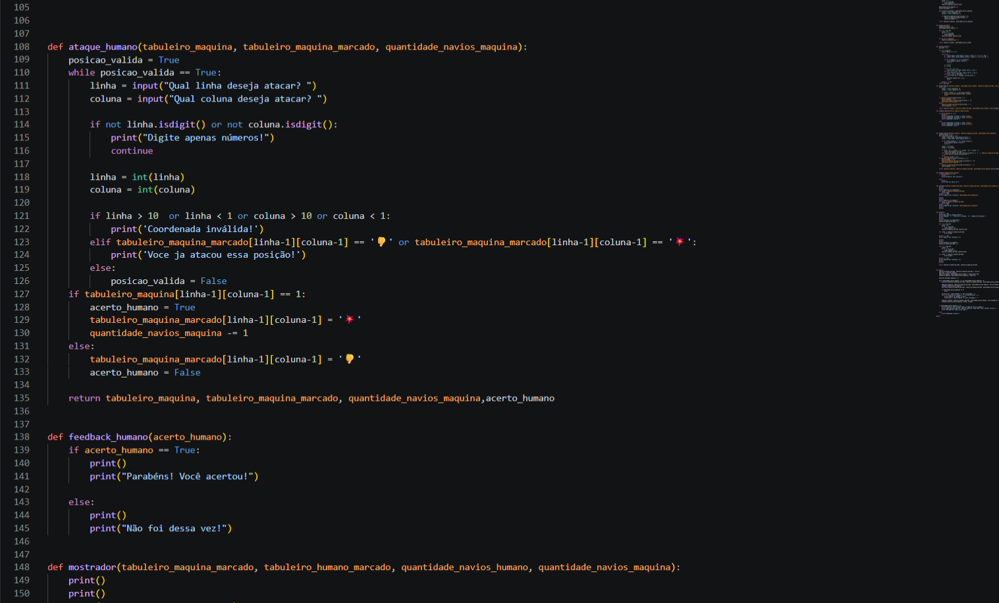

Batalha Naval

Desenvolvimento de um jogo de Batalha Naval em Python, com tabuleiro 10x10, posicionamento de navios e sistema de ataques contra o computador. O projeto utiliza funções, estruturas de repetição, validação de entradas e lógica de programação.
Banco de Dados

Desenvolvimento de um banco de dados para um Pet Shop, estruturando informações de produtos, fornecedores, funcionários, clientes, pets, vendas e serviços. O projeto utiliza SQL, tabelas, chaves primárias e estrangeiras para organizar e relacionar os dados.